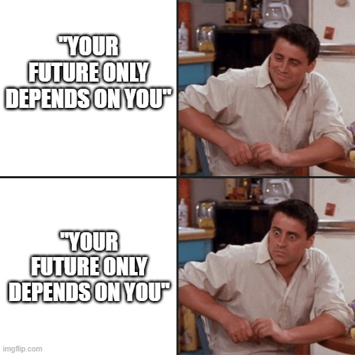

Métricas de Equidade em Aprendizado de Máquina e seus Fundamentos Éticos e Políticos
Fernando Pasquini Santos - Department of Computer Science, Calvin University
Sociedade da competição
Pressuposto: um mundo de recursos limitados e, portanto, de competição em todos os lugares e todas as áreas.
em empregos/admissões
em provas/testes/avaliações
em honras/medalhas/etc
em dinheiro/crédito
“O mundo é feito de ganhadores e perdedores”
Justiça, então, seria garantir que a competição é justa (“fair game”)
Inequidade e discriminação
Três possíveis sentidos:
Atribuir vantagem/desvantagem a alguém com base em critérios errados de relevância
Atribuir vantagem/desvantagem a alguém com base em estereótipos e generalizações
Atribuir vantagem/desvantagem a alguém com base em coisas sobre as quais a pessoa não tem controle
Automação e burocracia
Por que buscamos?
Automação permite escalar o sistema
Regras e procedimentos formais, em teoria, reduzem a arbitrariedade e tornam o raciocínio explícito.
Supõem de que o processo apenas envolve conhecimento explícito (e não tácito)
Automação e burocracia
No caso do uso de Machine Learning: “decisão baseada em dados”
Parece algo formal, mas o raciocínio acaba sendo uma caixa-preta (opacidade epistêmica)
Dados introduzem problemas:
Arbitrariedade na anotação dos dados (target labeling)
Arbitrariedade na seleção dos atributos/features
Limite da indução
Taxa de erros: maior ou menor?
Responsabilização e possibilidade de recursos?
Nosso exemplo: conjunto de dados ficcional
1.000 linhas, onde cada linha representa o perfil de um estudante, com atributos relacionados ao desempenho acadêmico e não acadêmico, necessidade financeira e informações demográficas.
Informações são geralmente consideradas em decisões sobre concessão de bolsas de estudo.
Student_ID: um identificador único para cada estudante.
GPA: média de notas, variando de 2.0 a 4.0.
Extracurricular_Score: uma pontuação que representa a participação e conquistas do estudante em atividades extracurriculares, variando de 0 a 100.
Community_Service_Hours: o total de horas que o estudante dedicou a atividades de serviço comunitário, variando de 0 a 200.
Financial_Need: indica se o estudante possui necessidade financeira.
Scholarship_Granted: indica se o estudante recebeu bolsa de estudo.
Sensitive_Attribute: um atributo sensível genérico com dois grupos, usado para análise de equidade (por exemplo, gênero, cor, idade, etc).
import pandas as pddf = pd.read_csv('https://cs.calvin.edu/courses/data/202/fsantos/datasets/student_performance.csv')df.loc[:,'Sensitive_Attribute'] = df['Sensitive_Attribute'].apply(lambda x: 0if x =='Group A'else1)display(df)
Student_ID
GPA
Extracurricular_Score
Community_Service_Hours
Financial_Need
Sensitive_Attribute
Scholarship_Granted
Prob_Class_1
0
1
4.000000
83
106
0
0
1
0.822589
1
3
2.152307
99
134
1
1
1
0.657725
2
13
4.000000
60
194
0
0
1
0.421887
3
20
2.344123
53
136
1
1
1
0.537936
4
44
2.259717
70
87
1
1
1
0.122756
...
...
...
...
...
...
...
...
...
375
744
4.000000
44
149
0
0
0
0.632398
376
114
3.521633
24
194
1
0
0
0.969348
377
443
4.000000
6
193
1
0
0
0.922639
378
668
2.000000
28
49
0
1
0
0.413321
379
702
2.000000
97
160
1
1
0
0.141278
380 rows × 8 columns
Treinando o modelo, considerando o atributo sensível
from sklearn.model_selection import train_test_splitfrom sklearn.linear_model import LogisticRegressionfrom sklearn.metrics import accuracy_score# Define features (X) and target variable (y)X = df[['GPA', 'Extracurricular_Score', 'Community_Service_Hours', 'Financial_Need', 'Sensitive_Attribute']]y = df['Scholarship_Granted']# Split data into training and testing setsX_train, X_test, y_train, y_test = train_test_split(X, y, test_size=0.2, random_state=42)# Initialize and train a Logistic Regression modelmodel = LogisticRegression()model.fit(X_train, y_train)# Make predictions on the test sety_pred = model.predict(X_test)
Matriz de confusão
Classe Predita: Positiva
Classe Predita: Negativa
Classe Real: Positiva
Verdadeiro Positivo (VP)
Falso Negativo (FN)
Classe Real: Negativa
Falso Positivo (FP)
Verdadeiro Negativo (VN)
Métricas
Métrica
Fórmula
Interpretação
Acurácia
(VP + VN) / Total
Proporção de acertos totais
Precisão (Positive Predictive Value)
VP / (VP + FP)
Entre os classificados como positivos, quantos realmente são
Revocação (Recall ou Sensibilidade)
VP / (VP + FN)
Entre os positivos reais, quantos foram corretamente identificados
Especificidade
VN / (VN + FP)
Entre os negativos reais, quantos foram corretamente identificados
Taxa de Falsos Positivos (FPR)
FP / (FP + VN)
Negativos reais classificados erroneamente como positivos
Taxa de Falsos Negativos (FNR)
FN / (FN + VP)
Positivos reais classificados erroneamente como negativos
Entre os classificados como negativos, quantos realmente são
Taxa de Prevalência
(VP + FN) / Total
Proporção de positivos na população real
No nosso caso:
from sklearn.metrics import confusion_matrix# Calculate the confusion matrix for the entire test setcm_overall = confusion_matrix(y_test, y_pred)# Separate the test set by the sensitive attributeX_test_groupA = X_test[X_test['Sensitive_Attribute'] ==0]y_test_groupA = y_test[X_test['Sensitive_Attribute'] ==0]y_pred_groupA = model.predict(X_test_groupA)X_test_groupB = X_test[X_test['Sensitive_Attribute'] ==1]y_test_groupB = y_test[X_test['Sensitive_Attribute'] ==1]y_pred_groupB = model.predict(X_test_groupB)# Calculate the confusion matrix for Group Acm_groupA = confusion_matrix(y_test_groupA, y_pred_groupA)# Calculate the confusion matrix for Group Bcm_groupB = confusion_matrix(y_test_groupB, y_pred_groupB)# Create DataFrames for better readabilitycm_overall_df = pd.DataFrame(cm_overall, index=['Actual 0', 'Actual 1'], columns=['Predicted 0', 'Predicted 1'])cm_groupA_df = pd.DataFrame(cm_groupA, index=['Actual 0', 'Actual 1'], columns=['Predicted 0', 'Predicted 1'])cm_groupB_df = pd.DataFrame(cm_groupB, index=['Actual 0', 'Actual 1'], columns=['Predicted 0', 'Predicted 1'])print("\nOverall Confusion Matrix:")display(cm_overall_df)print("\nConfusion Matrix for Group A:")display(cm_groupA_df)print("\nConfusion Matrix for Group B:")display(cm_groupB_df)
Overall Confusion Matrix:
Predicted 0
Predicted 1
Actual 0
27
10
Actual 1
6
33
Confusion Matrix for Group A:
Predicted 0
Predicted 1
Actual 0
10
6
Actual 1
1
14
Confusion Matrix for Group B:
Predicted 0
Predicted 1
Actual 0
17
4
Actual 1
5
19
Metric
Group A
Group B
Acceptance Rate
20/31, 64.52%
23/45, 51.11%
Accuracy
77.4%
80.0%
Precision
70.0%
82.6%
Recall
93.3%
79.2%
F1-Score
80.0%
80.9%
Em que momento considerar a equidade?
Pré-processamento: ajustar o espaço de atributos para que não tenha correlação com o atributo sensível.
Durante o treinamento: incorporar a restrição no processo de otimização que constrói o classificador.
Pós-processamento: ajustar um classificador já treinado para que não tenha correlação com o atributo sensível.
Vamos focar no pós-processamento, considerando que o atributo sensível foi eliminado no treinamento.
Quatro estratégias
Se resolvermos eliminar o atributo sensível do treinamento:
Ignorar os grupos, usar o mesmo limiar de decisão;
Usar limiares de decisão diferentes para maximizar a acurácia (“máximo lucro”)
Paridade demográfica: alcançar uma taxa de aceitação igual em todos os grupos;
Paridade de erro ou acurácia: alcançar taxas iguais de verdadeiros/falsos positivos/negativos em todos os grupos.
1a estratégia: ignorar os grupos, limiar único
from sklearn.model_selection import train_test_splitfrom sklearn.linear_model import LogisticRegressionfrom sklearn.metrics import accuracy_score# Define features (X) and target variable (y) - ignore sensitive attributeX = df[['GPA', 'Extracurricular_Score', 'Community_Service_Hours', 'Financial_Need']]y = df['Scholarship_Granted']# Convert 'Financial_Need' to numerical (0 or 1) if it's not alreadyifnot pd.api.types.is_numeric_dtype(X['Financial_Need']): X['Financial_Need'] = X['Financial_Need'].astype(int)# Split data into training and testing setsX_train, X_test, y_train, y_test = train_test_split(X, y, test_size=0.2, random_state=42)# Initialize and train a Logistic Regression modelmodel = LogisticRegression()model.fit(X_train, y_train)# Make predictions on the test sety_pred = model.predict(X_test)
Por exemplo, vamos identificar o atributo com maior importância:
# Get feature importances from the trained modelfeature_importances = model.coef_[0]# Create a DataFrame to display feature importancesfeature_importance_df = pd.DataFrame({'Feature': X.columns, 'Importance': feature_importances})# Sort the DataFrame by importancefeature_importance_df = feature_importance_df.sort_values(by='Importance', ascending=False)# Print the feature importancesfeature_importance_df
Feature
Importance
0
GPA
0.256382
1
Extracurricular_Score
0.065146
2
Community_Service_Hours
0.012244
3
Financial_Need
-0.224091
Observe como o GPA é afetado pelos grupos:
import plotly.express as px# Group data by 'Sensitive_Attribute' and calculate the mean GPA for each groupgpa_by_group = df.groupby('Sensitive_Attribute')['GPA'].mean()# Create a bar plot using Plotly Expressfig = px.bar(gpa_by_group, x=gpa_by_group.index, y='GPA', labels={'GPA': 'Mean GPA', 'Sensitive_Attribute': 'Group'}, title='Mean GPA by Sensitive Attribute')fig.show()
2a estratégia: diferentes limiares, máximo lucro
Do ponto de vista de quem vai ofertar as bolsas, a ideia é acertar o máximo que puder.
E se limiares diferentes forem atribuídos aos grupos de forma a maximizar os acertos?
# Find the optimal threshold for Group A to minimize errorsbest_threshold_A =0min_errors_A =float('inf')# Filter for groupsdf_proba_group_A = df_proba[df_proba['Sensitive_Attribute'] ==0]df_proba_group_B = df_proba[df_proba['Sensitive_Attribute'] ==1]for threshold in np.linspace(0, 1, 101): # Test thresholds from 0 to 1 df_proba_group_A_test = df_proba_group_A.copy() df_proba_group_A_test['Predicted_Label'] = (df_proba_group_A['Prob_Class_1'] >= threshold).astype(int) errors_A =sum(df_proba_group_A_test['Predicted_Label'] != df_proba_group_A_test['True_Label'])if errors_A < min_errors_A: min_errors_A = errors_A best_threshold_A = thresholdprint(f"Best threshold for Group A: {best_threshold_A}")print(f"Minimum errors for Group A: {min_errors_A}")# Find the optimal threshold for Group B to minimize errorsbest_threshold_B =0min_errors_B =float('inf')for threshold in np.linspace(0, 1, 101): # Test thresholds from 0 to 1 df_proba_group_B_test = df_proba_group_B.copy() df_proba_group_B_test['Predicted_Label'] = (df_proba_group_B['Prob_Class_1'] >= threshold).astype(int) errors_B =sum(df_proba_group_B_test['Predicted_Label'] != df_proba_group_B_test['True_Label'])if errors_B < min_errors_B: min_errors_B = errors_B best_threshold_B = thresholdprint(f"Best threshold for Group B: {best_threshold_B}")print(f"Minimum errors for Group B: {min_errors_B}")
Best threshold for Group A: 0.7000000000000001
Minimum errors for Group A: 6
Best threshold for Group B: 0.24
Minimum errors for Group B: 8
# Get y_pred based on the group-specific thresholdsy_pred_adjusted = np.zeros_like(y_test) # Initialize with zeros (default class 0)# Apply threshold for Group Agroup_A_indices_test = df.loc[y_test.index, 'Sensitive_Attribute'] ==0y_pred_adjusted[group_A_indices_test] = (df_proba_group_A['Prob_Class_1'] >= best_threshold_A).astype(int)# Apply threshold for Group Bgroup_B_indices_test = df.loc[y_test.index, 'Sensitive_Attribute'] ==1y_pred_adjusted[group_B_indices_test] = (df_proba_group_B['Prob_Class_1'] >= best_threshold_B).astype(int)metrics_table_adjusted = create_metrics_table(y_test, y_pred_adjusted, df, group_col_name='Group')display(metrics_table_adjusted)
Metric
Group A
Group B
Acceptance Rate
15/31, 48.39%
32/45, 71.11%
Accuracy
80.6%
82.2%
Precision
80.0%
75.0%
Recall
80.0%
100.0%
F1-Score
80.0%
85.7%
3a estratégia: paridade demográfica
A mesma quantidade de pessoas de cada grupo é escolhida (Positivos A = Positivos B)
# Find thresholds to achieve demographic paritydef find_thresholds_for_demographic_parity(df_group_A, df_group_B, lambda_weight=0.5): best_threshold_A =0 best_threshold_B =0 best_combined_metric =float('inf')def calculate_accuracy(df, threshold): df_test = df.copy() df_test['Predicted_Label'] = (df_test['Prob_Class_1'] >= threshold).astype(int) accuracy = (df_test['Predicted_Label'] == df_test['True_Label']).mean()return accuracy# Test thresholds for both groupsfor threshold_A in np.linspace(0, 1, 101):for threshold_B in np.linspace(0, 1, 101): ppr_A = df_proba_group_A[df_group_A['Prob_Class_1'] >= threshold_A].shape[0] ppr_B = df_proba_group_B[df_group_B['Prob_Class_1'] >= threshold_B].shape[0] ppr_diff =abs(ppr_A - ppr_B)# Calculate accuracy for both groups accuracy_A = calculate_accuracy(df_group_A, threshold_A) accuracy_B = calculate_accuracy(df_group_B, threshold_B) overall_accuracy = (accuracy_A + accuracy_B) /2# Combine PPR difference and accuracy into a single metric combined_metric = lambda_weight * ppr_diff - (1- lambda_weight) * overall_accuracy# Update best thresholds if the combined metric improvesif combined_metric < best_combined_metric: best_combined_metric = combined_metric best_threshold_A = threshold_A best_threshold_B = threshold_Breturn best_threshold_A, best_threshold_B# Find the thresholds for demographic paritybest_threshold_A, best_threshold_B = find_thresholds_for_demographic_parity(df_proba_group_A, df_proba_group_B)print(f"Threshold for Group A (Demographic Parity): {best_threshold_A}")print(f"Threshold for Group B (Demographic Parity): {best_threshold_B}")
Threshold for Group A (Demographic Parity): 0.62
Threshold for Group B (Demographic Parity): 0.63
# Get y_pred based on the group-specific thresholdsy_pred_adjusted = np.zeros_like(y_test) # Initialize with zeros (default class 0)# Apply threshold for Group Agroup_A_indices_test = df.loc[y_test.index, 'Sensitive_Attribute'] ==0y_pred_adjusted[group_A_indices_test] = (df_proba_group_A['Prob_Class_1'] >= best_threshold_A).astype(int)# Apply threshold for Group Bgroup_B_indices_test = df.loc[y_test.index, 'Sensitive_Attribute'] ==1y_pred_adjusted[group_B_indices_test] = (df_proba_group_B['Prob_Class_1'] >= best_threshold_B).astype(int)metrics_table_adjusted = create_metrics_table(y_test, y_pred_adjusted, df, group_col_name='Group')display(metrics_table_adjusted)
Metric
Group A
Group B
Acceptance Rate
18/31, 58.06%
18/45, 40.00%
Accuracy
77.4%
77.8%
Precision
72.2%
88.9%
Recall
86.7%
66.7%
F1-Score
78.8%
76.2%
4a estratégia: paridade de erro ou acurácia
Por exemplo, podemos tentar equalizar a taxa de verdadeiros positivos entre grupos:
# Function to calculate True Positive Rate (TPR) for a given threshold and groupdef calculate_tpr(df, threshold): df_test = df.copy() df_test['Predicted_Label'] = (df_test['Prob_Class_1'] >= threshold).astype(int) true_positives = df_test[(df_test['Predicted_Label'] ==1) & (df_test['True_Label'] ==1)].shape[0] condition_positives = df_test[df_test['True_Label'] ==1].shape[0] tpr = true_positives / condition_positives if condition_positives >0else0return tprdef calculate_accuracy(df, threshold): df_test = df.copy() df_test['Predicted_Label'] = (df_test['Prob_Class_1'] >= threshold).astype(int) accuracy = (df_test['Predicted_Label'] == df_test['True_Label']).mean()return accuracy# Function to find thresholds for equal opportunity while balancing accuracydef find_thresholds_balanced_equal_opportunity(df_group_A, df_group_B, lambda_weight=0.5): best_threshold_A =0 best_threshold_B =0 best_combined_metric =float('inf')# Test thresholds for both groupsfor threshold_A in np.linspace(0, 1, 101):for threshold_B in np.linspace(0, 1, 101):# Calculate TPR for both groups tpr_A = calculate_tpr(df_group_A, threshold_A) tpr_B = calculate_tpr(df_group_B, threshold_B) tpr_diff =abs(tpr_A - tpr_B)# Calculate accuracy for both groups accuracy_A = calculate_accuracy(df_group_A, threshold_A) accuracy_B = calculate_accuracy(df_group_B, threshold_B) overall_accuracy = (accuracy_A + accuracy_B) /2# Combine TPR difference and accuracy into a single metric combined_metric = lambda_weight * tpr_diff - (1- lambda_weight) * overall_accuracy# Update best thresholds if the combined metric improvesif combined_metric < best_combined_metric: best_combined_metric = combined_metric best_threshold_A = threshold_A best_threshold_B = threshold_Breturn best_threshold_A, best_threshold_B# Find thresholds balancing equal opportunity and accuracybest_threshold_A, best_threshold_B = find_thresholds_balanced_equal_opportunity( df_proba_group_A, df_proba_group_B, lambda_weight=0.5)print(f"Threshold for Group A (Equal Opportunity): {best_threshold_A}")print(f"Threshold for Group B (Equal Opportunity): {best_threshold_B}")
Threshold for Group A (Equal Opportunity): 0.7000000000000001
Threshold for Group B (Equal Opportunity): 0.5
# Get y_pred based on the group-specific thresholdsy_pred_adjusted = np.zeros_like(y_test) # Initialize with zeros (default class 0)# Apply threshold for Group Agroup_A_indices_test = df.loc[y_test.index, 'Sensitive_Attribute'] ==0y_pred_adjusted[group_A_indices_test] = (df_proba_group_A['Prob_Class_1'] >= best_threshold_A).astype(int)# Apply threshold for Group Bgroup_B_indices_test = df.loc[y_test.index, 'Sensitive_Attribute'] ==1y_pred_adjusted[group_B_indices_test] = (df_proba_group_B['Prob_Class_1'] >= best_threshold_B).astype(int)metrics_table_adjusted = create_metrics_table(y_test, y_pred_adjusted, df, group_col_name='Group')display(metrics_table_adjusted)
Metric
Group A
Group B
Acceptance Rate
15/31, 48.39%
24/45, 53.33%
Accuracy
80.6%
77.8%
Precision
80.0%
79.2%
Recall
80.0%
79.2%
F1-Score
80.0%
79.2%
Visões sobre justiça (Barocas, Hardt, Narayanan)
Visão
Objetivo
Intervenção
Quem arca com o custo
Exemplos de técnicas e critérios
Problemas
Estrita
Garantir que pessoas com qualificações semelhantes tenham chances semelhantes de acesso a oportunidades.
No momento da tomada de decisão
Ninguém
Ignorar grupos; maximizar lucro
Ignora desigualdades históricas e estruturais; pressupõe que é possível medir o mérito.
Intermediária
Desconsiderar diferenças que surgem de injustiças passadas, ajustando decisões para compensar desigualdades.
Na tomada de decisão, especialmente em momentos críticos
Tomador de decisão (pode repassar custo ao afetado)
Paridade de erro, acurácia, outros ajustes
Falta de critérios claros; risco de injustiça reversa; difícil quantificar compensações.
Ampla
Garantir que pessoas com habilidades e ambições semelhantes possam realizar seu potencial igualmente.
Ação contínua do Estado (educação, saúde, habitação, etc.)
Contribuintes
Paridade demográfica; políticas públicas
Exige mudanças estruturais; alto custo político e econômico; difícil de aplicar no curto prazo.
Outras abordagens (talvez tentando se aproximar do meio)
Equidade por indivíduo
Em vez de agrupar as pessoas por categorias como gênero ou raça, avalia-se semelhança entre indivíduos com base em seus atributos relevantes (como desempenho, habilidades, contexto social)
Garantir que não haja discriminação entre aqueles que são equivalentes segundo esse critério.
Desafios:
Como definir “semelhança”?
Quais atributos são relevantes para comparar indivíduos?
Ignorar completamente as identidades coletivas (como raça e gênero) pode, paradoxalmente, apagar as injustiças sistemáticas vividas por grupos historicamente marginalizados.
Equidade por contrafactuais
“Se esta mesma pessoa não fosse do gênero X, ou da cor Y, ou da idade Z, o resultado seria diferente?”
Desafios:
É possível saber como seria o “mundo alternativo”?
Como simular a mesma pessoa com tudo igual, exceto um aspecto identitário fundamental?
Esbarra em limites filosóficos e técnicos da modelagem de identidades humanas…
Equidade por causalidade
Uso de modelos causais para avaliar se o atributo sensível está realmente influenciando o resultado de forma indevida.
Desafios:
Conseguimos modelar corretamente todas as causas relevantes?
Quais variáveis ocultas não estamos considerando?
Bem mais sofisticado e difícil de levar adiante.
Por exemplo, path analysis, do-calculus
O problema do mérito
“All Americans have not only the right, but the solemn responsibility to ascend as far as their talents and determination will take them.” - Bill Clinton, 1995
“Equidade significa poder competir apenas em torno daquilo que temos controle ou responsabilidade”.
Parece justo, mas é extremamente problemático…
Não é simples identificar o que está e o que não está sob o controle de um indivíduo.
Por exemplo, o caso de uma gravidez: a pessoa tem certo controle, mas, no geral, concordamos que isso ainda não deveria afetar seus méritos.
Também não é simples medir o que está e o que não está sob o controle de um indivíduo
Coloca um peso infinito sobre o indivíduo

Faz os “bem-sucedidos” ignorarem a influência de fatores fora de seu controle que garantiram seus lugares.
“Pessoas que, com um pouco de esforço e talento, vencem em uma meritocracia, carregam uma dívida pessoal que é ofuscada pela competição. […] Dessa forma, mesmo uma meritocracia justa — em que não há trapaça, suborno ou privilégios especiais para os ricos — induz uma impressão equivocada: a de que chegamos onde estamos por conta própria. Os anos de trabalho árduo exigidos dos candidatos a universidades de elite praticamente os forçam a acreditar que seu sucesso é resultado exclusivo de suas próprias ações — e, se falharem, não têm a quem culpar senão a si mesmos. Esse é um fardo pesado para os jovens carregarem. Além disso, isso corrói as sensibilidades cívicas. Pois, quanto mais nos pensamos como pessoas autossuficientes e conquistadoras de si mesmas, mais difícil será aprender a gratidão e a humildade. E sem esses sentimentos, é difícil se importar com o bem comum.” (Sandel, p. 23)
Cria uma cultura de violência
Uma cultura de esforço para “subida social” formenta sentimentos de ganância e possessividade
O que gera também o pavor de ter sua própria posição/bens roubados
E uma ansiedade em justificar porque uns merecem algo e outros não…
Especialmente usando estatística (“preconceito formalizado”)
Assim, fomenta o discurso de ódio entre grupos
Justiça passa a ser “garantir que perdedores reconheçam o lugar deles e fiquem lá”
Teorias de bode expiatório: “o mundo está errado por causa de grupos que não estão onde deveriam estar”
Ex.: linchamentos públicos nos EUA entre 1883 e 1941
O problema da otimização
Normalmente, pessoas querem “maximizar a utilidade/eficiência”, então acham que precisam escolher A MELHOR pessoa (independentemente de visões sobre justiça).
Assim, acaba-se confiando em métodos algoritmos complexos (veja este exemplo).
No entanto, será que é sempre possível identificar A MELHOR?
Nessa tentativa de maximização, os processos de tomada de decisão frequentemente acabam recorrendo a critérios e medições infundadas.
Divinação estatística”, apofenia…
E se não houver uma pessoa claramente melhor? E se todos forem suficientemente qualificados?
Randomização e sorteio: um ponto defendido tanto por BHN quanto por Sandel (com as devidas e cuidadosas considerações, é claro).
Há um argumento forte de que, às vezes, a randomização é a melhor forma de evitar discriminação. Reconhecer os limites do nosso conhecimento e abrir espaço para a incerteza é uma das melhores maneiras de evitar olhar para aquilo que não deveríamos considerar.
Uma outra perspectiva: além da escassez, da competição e do mérito
E se o ponto de partida fosse de que há abundância no mundo e não precisamos competir em tudo?
E se a ideia de “boa vida” significasse mais do que o bem individual, mas também dependesse do bem de todos (bem comum)?
“Para muitos de nós, nosso primeiro pensamento ao considerar um sistema do qual fazemos parte é: ‘Como posso chegar ao topo?’, em vez de: ‘Como posso ajudar aqueles que estão na base?’”
O princípio da solidariedade
“A solidariedade é uma palavra que com muita frequência é esquecida ou silenciada, porque é incômoda… Ela implica criar uma nova mentalidade, que pense em termos de comunidade e da prioridade da vida de todos sobre a apropriação dos bens por parte de poucos.” — Fratelli Tutti, §116, Papa Francisco
Enquanto a meritocracia enfatiza a ascensão individual e o merecimento, a solidariedade enfatiza:
A natureza compartilhada da vida e das oportunidades. (“Destino Universal dos Bens”, Compêndio, §171);
A responsabilidade dos fortes para com os fracos, e opção preferencial pelos pobres;
Que a graça, e não o mérito, é a postura fundamental.
“[Na perspectiva do Antigo Testamento] Os justos (ṣaddîq) estão dispostos a se colocar em desvantagem para beneficiar a comunidade; os ímpios estão dispostos a colocar a comunidade em desvantagem para beneficiar a si mesmos. Por isso, podemos dizer que a generosidade não é apenas uma questão de misericórdia, mas de justiça. Ezequiel 18:5 começa com uma afirmação geral de que o [justo], o ṣaddîq, pratica a justiça, e apresenta uma lista de onze formas concretas pelas quais os seres humanos exercem essas qualidades. Deixar de praticar qualquer uma dessas coisas é ser injusto, e a lista inclui ‘partilhar o pão com o faminto e vestir o que está sem roupa’ (v. 7). Portanto, não ser uma pessoa generosa é ser uma pessoa injusta.” Tim Keller, “Justiça na Bíblia”
Ideias?
E se repensássemos nossos modelos não como filtros de mérito, mas como mediações de cuidado?
Pergunta tradicional (filtro de mérito)
Nova pergunta (mediação de cuidado)
O que isso mudaria na prática do sistema
Quem é o melhor?
Quem está precisando de apoio?
Mudança do foco de performance para vulnerabilidade; introdução de variáveis de necessidade
Quem merece essa oportunidade?
Como garantir que todos tenham acesso digno?
Uso de políticas de inclusão, reserva, sorteio justo quando há empate ou incerteza
Como evitar que o sistema erre?
Como minimizar sofrimento causado por decisões injustas?
Sistemas com canais de recurso, explicabilidade, reversibilidade; preocupação com impacto social
Como prever com máxima precisão?
Como agir com justiça mesmo quando a previsão falha?
Adoção de zonas de incerteza, human-in-the-loop, decisões prudenciais em vez de puramente técnicas